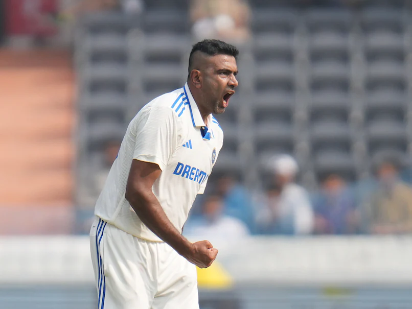

Ravichandran Ashwin
Role: Bowler
Bio: One of the top spinners in world cricket, Ashwin is known for his variations and ability to turn the ball sharply.
Career Stats
| Format | Matches | Wickets | Best Bowling | Average | Economy | Strike Rate | 5-Wicket Hauls |
|---|---|---|---|---|---|---|---|
| Test | 93 | 442 | 7/145 | 23.0 | 2.8 | 52.1 | 30 |
| ODI | 126 | 173 | 4/25 | 32.0 | 4.9 | 36.9 | 2 |
| T20I | 54 | 73 | 4/8 | 22.3 | 6.8 | 15.3 | 1 |
Memorable Moments

Ashwin's incredible 7-wicket haul against Australia in 2021 showcased his spin bowling prowess.
Aswin getting his 500th wicket in test's.